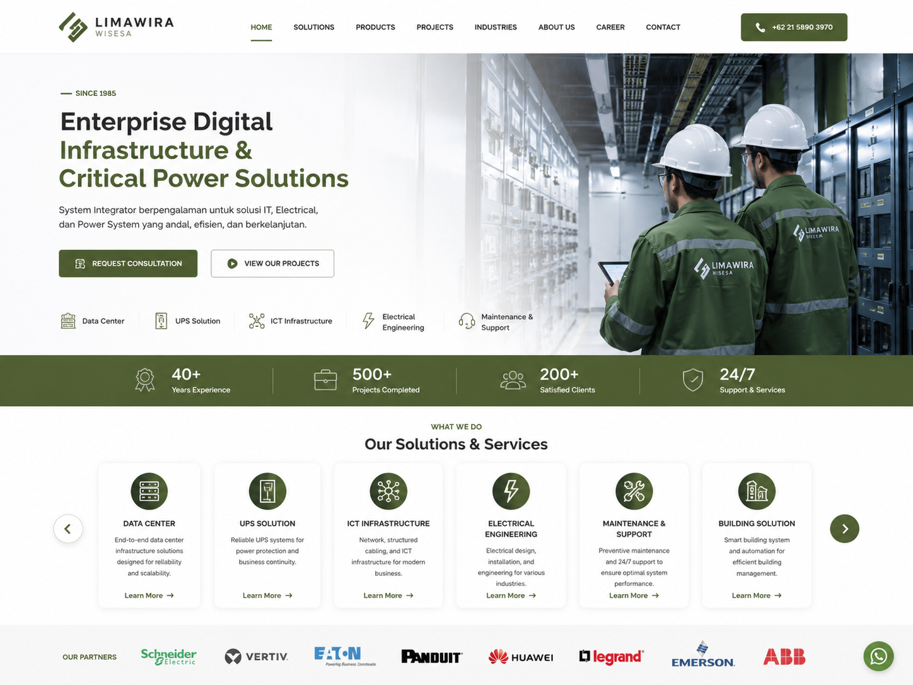
Menu Tab
Contact us: +62 816-724-090
Isinya
Since 1985
Building Enterprise Digital Infrastructure & Critical Power Solutions
For over 40 years, Limawira has been a trusted partner in Digital Infrastructure, Critical Power, and Electrical Engineering, delivering innovative solutions through engineering excellence, responsive lifecycle support, and an unwavering commitment to customer success.
For more than four decades, PT. Limawira Wisesa has been a trusted engineering and system integration company, delivering reliable Critical Power, Data Center, ICT Infrastructure, and Electrical Engineering solutions for organizations across Indonesia.
Founded in 1985 by five young professionals with expertise in Mechanical and Electrical Engineering, Limawira Wisesa began its journey by providing high-quality engineering services. As technology rapidly evolved and customer demands became increasingly complex, the company continuously expanded its capabilities to deliver integrated infrastructure solutions that support modern businesses.
In 1990, Limawira Wisesa entered the Critical Power industry and became the exclusive distributor of Exide Electronics USA Uninterruptible Power Supply (UPS) systems in Indonesia. This milestone established the company's strong reputation in delivering reliable power protection solutions for mission-critical environments.
Recognizing the growing demand for integrated information and communication systems, Limawira Wisesa broadened its expertise into ICT Infrastructure by introducing enterprise networking and structured cabling solutions from leading global manufacturers, including Allied Telesyn, Panduit, Alcatel, and AdventNet. This strategic expansion enabled the company to provide customers with complete end-to-end infrastructure solutions rather than standalone products.
Driven by a commitment to innovation, Limawira Wisesa established its own Research & Development Division in 2005, complete with dedicated workshops and testing facilities. This investment enabled the company to design and manufacture specialized electrical protection systems tailored to unique customer requirements while collaborating with international OEM partners from leading industrial countries.
Today, Limawira Wisesa has evolved into a comprehensive System Integrator, delivering end-to-end solutions that span consultation, engineering design, procurement, installation, testing & commissioning, maintenance, and managed support services. Our expertise covers Data Centers, Critical Power Systems, ICT Infrastructure, Smart Building Technologies, Electrical Engineering, and Preventive Maintenance, helping organizations build secure, efficient, and future-ready infrastructure.
With over 40 years of experience, hundreds of successful projects, and partnerships with globally recognized technology leaders, Limawira Wisesa continues to uphold its commitment to engineering excellence, innovation, and long-term customer success. Every solution we deliver is designed to maximize reliability, operational efficiency, and business continuity for the organizations we serve.
Limawira menghadirkan solusi Data Center secara end-to-end mulai dari konsultasi, desain, pengadaan, instalasi, hingga commissioning untuk mendukung pembangunan maupun modernisasi data center. Solusi kami meliputi server rack, UPS, Precision Air Conditioner (PAC/CRAC/CRAH), PDU, structured cabling, fire suppression system, environmental monitoring, CCTV, dan berbagai infrastruktur pendukung lainnya guna memastikan data center beroperasi secara aman, efisien, dan berkelanjutan.
Kementerian Pertanian | |
|---|---|
Kementerian Keuangan DIrektorat Jendera Perbendaharaan | |
Samakta Mitra |
Secara spesifik, Flagship produk Limawira adalah UPS bernama Remingtons dimana UPS ini mampu menyediakan sistem catu daya tanpa putus (Uninterruptible Power Supply) yang dirancang untuk menjaga kontinuitas operasional infrastruktur kritikal. Dengan performa yang andal dan efisiensi tinggi, Remingtons melindungi server, storage, perangkat jaringan, serta sistem data center dari gangguan listrik seperti pemadaman, lonjakan tegangan, maupun fluktuasi daya.
Didukung layanan konsultasi, implementasi, pengujian, hingga pemeliharaan, Limawira menghadirkan solusi UPS Remingtons (Type Offline, Line Interactive, Online) yang sesuai dengan kebutuhan berbagai industri mulai dari ruang server, data center, fasilitas kesehatan, manufaktur, perbankan, hingga telekomunikasi, sehingga memastikan ketersediaan daya yang stabil dan mendukung keberlangsungan operasional bisnis.
Taspen (Persero) | |
|---|---|
BPOM Badan Pengawas Obat dan Makanan | 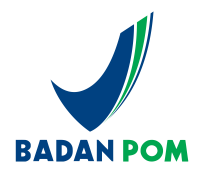 |
BTN Bank Tabungan Negara | |
JICT Jakarta International Container Terminal | 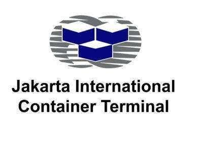 |
Limawira menyediakan solusi IT yang terintegrasi untuk membantu organisasi membangun infrastruktur TI yang modern, aman, dan andal. Dengan pengalaman melayani berbagai sektor industri, Limawira menghadirkan solusi end-to-end yang mencakup server, storage, networking, virtualization, cloud, backup, cybersecurity, unified communication, serta managed services. Seluruh solusi dirancang untuk meningkatkan kinerja operasional, keamanan sistem, dan mendukung transformasi digital sesuai dengan kebutuhan bisnis pelanggan.
Kementerian Keuangan Direktorat Jenderal Bea dan Cukai | 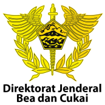 |
|---|---|
Kementerian Dalam Negeri | 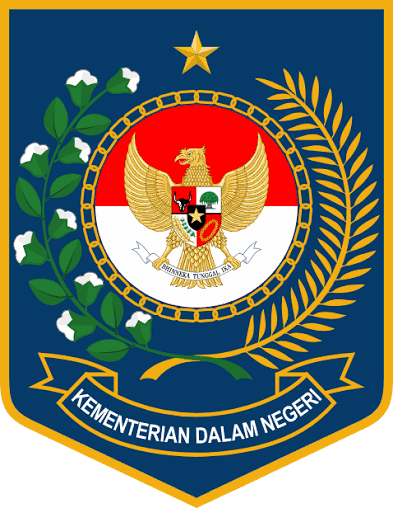 |
Pemprov DKI Jakarta | 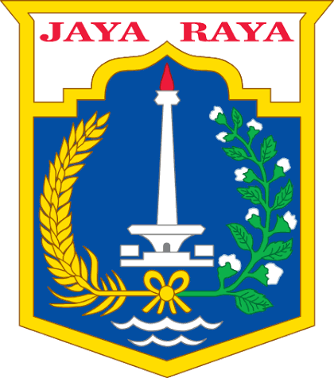 |
Limawira menyediakan layanan Mechanical & Electrical Engineering yang mencakup desain, instalasi, pengujian, dan commissioning sistem mekanikal serta elektrikal. Layanan kami meliputi sistem distribusi tenaga listrik, grounding, HVAC, generator, panel listrik, lighting, fire protection, dan berbagai infrastruktur pendukung lainnya sesuai dengan standar keselamatan dan kebutuhan operasional pelanggan.
TELKOM SATELIT INDONESIA | |
|---|---|
ASURANSI JIWA MANULIFE INDONESIA | 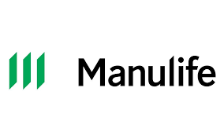 |
BUMI SERPONG DAMAI |
Limawira menyediakan layanan Service & Maintenance Support untuk memastikan seluruh infrastruktur dan sistem pelanggan tetap beroperasi secara optimal. Layanan kami mencakup preventive maintenance, corrective maintenance, troubleshooting, emergency support, health check, penggantian suku cadang, serta kontrak pemeliharaan berkala dengan SLA yang disesuaikan dengan kebutuhan pelanggan.
Astra Sedaya FInanace (Astra Credit Company) | |
|---|---|
BAPPENAS/Kantor Meneg PPN | |
LKBN Antara | 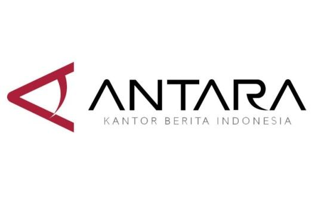 |
4. Our Partner & Client

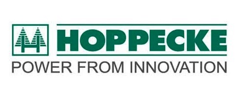


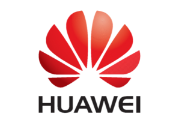
Pelanggan Kami
(masukan logo customer yang ada diatas dan tambahkan and 1000+
5. Awards
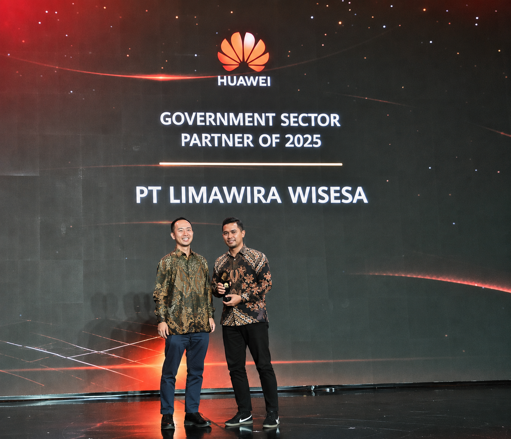
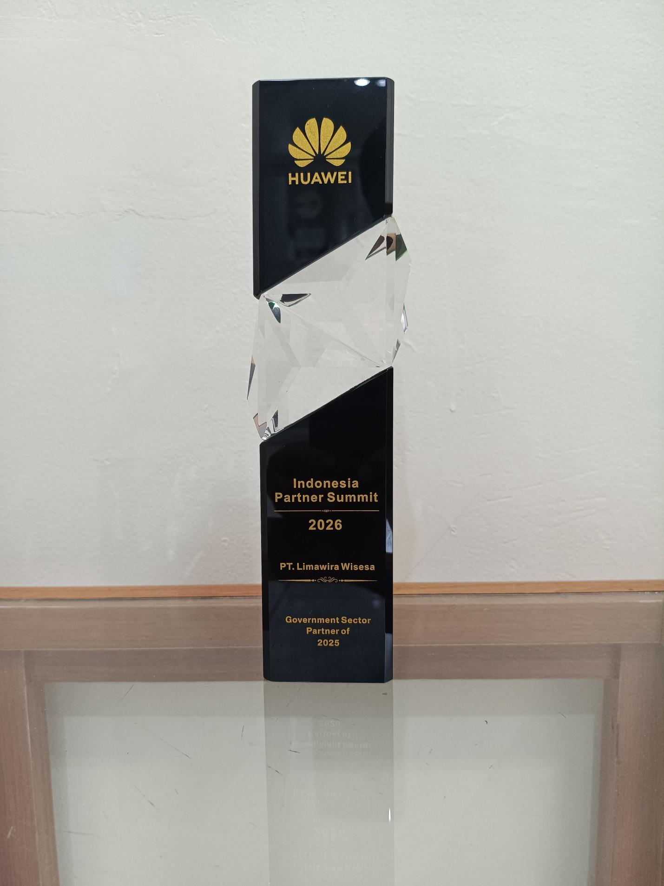
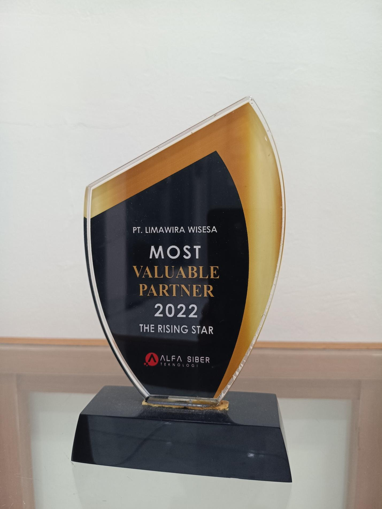
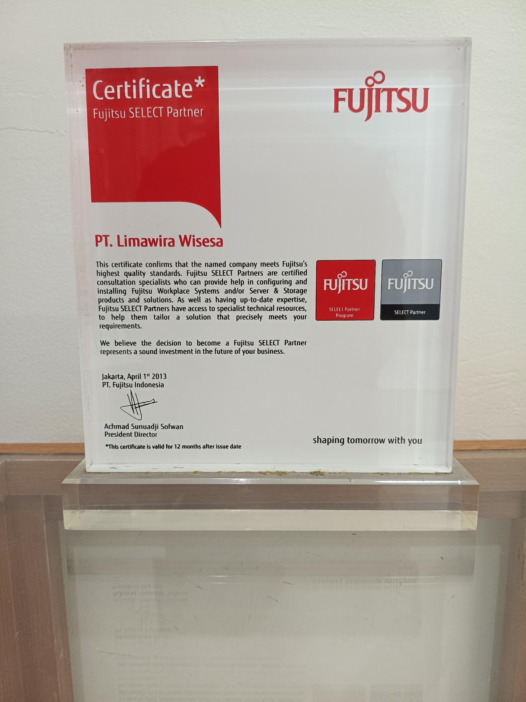
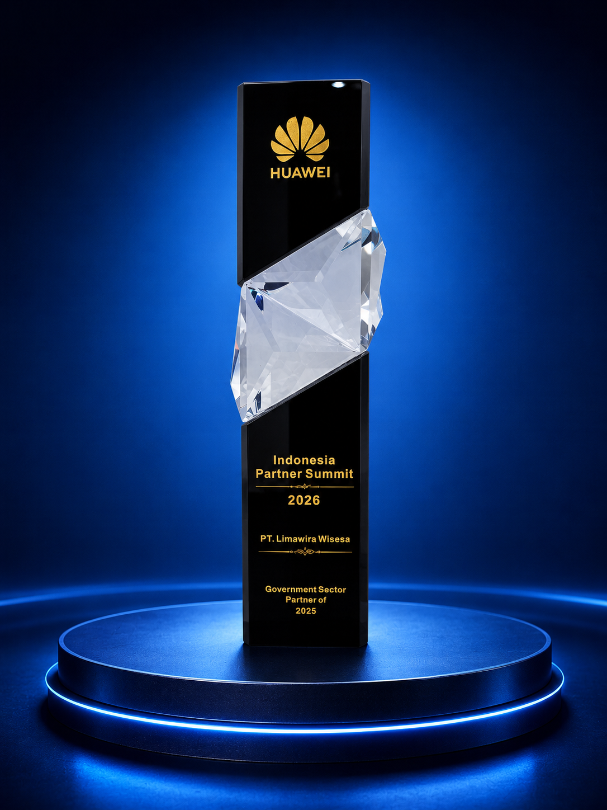
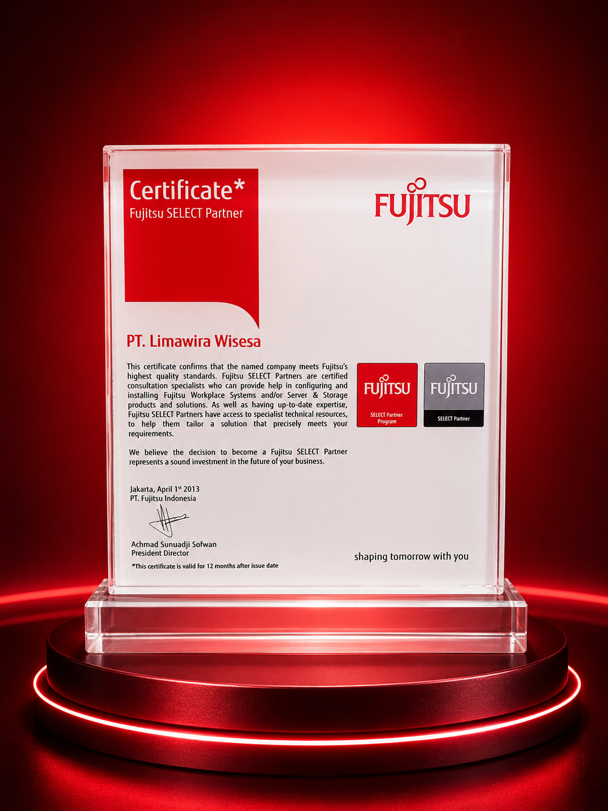
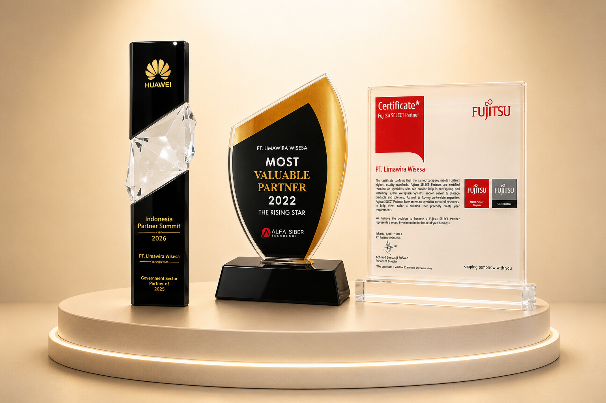